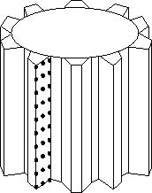
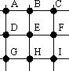

Home Page
F.A.Qs
Statistical Charts
Past Contests
Scheduled Contests
Award Contest
| Online Judge | Problem Set | Authors | Online Contests | User | ||||||
|---|---|---|---|---|---|---|---|---|---|---|
| Web Board Home Page F.A.Qs Statistical Charts | Current Contest Past Contests Scheduled Contests Award Contest | |||||||||
|
Language: Gear Profiles
Description The Dynamic Gears Company is developing a new program to manufacture gears based on a master gear. The first step consists on making measurements of the master gear using the T-500 machine. This machine creates a file with coordinates of different points on one of the gear's tooth.
The T-500 machine finds the coordinates of several points on the surface of one of the tooth's face. These points represent a grid that defines the entire surface (as seen on the image). The T-500 machine measures X points on the tooth from top to bottom, then it moves towards the inside to read again X points. This sweeping is done Y times until the gear is complete. The final result of the T-500 machine is a file with a consecutive list of X*Y points. The Gear Technology Department has to develop a program capable of calculating the geometry of the tooth based on the grid of points, and generate the instructions for the machine that will cut the gears. After analyzing the problem it was decided that the Normal value of several points has to be calculated so that the cutting machine knows how to generate the gear. To be able to calculate the Normal value, 9 points from the grid have to be considered together (as seen on the diagram). For example, if the T-500 machine read 5 points from top to bottom and 3 columns from left to right, points A, D, and G come from the first three points the T-500 machine read. Points B, E, and H come from points 6, 7, and 8. Points C, F, and I come from points 11, 12, and 13. The small 9-points grid contains the required values to calculate the Normal value using the following formula: Normx=Nx*Factor Where The program to develop must go through all points on the grid that the T-500 machine generated, using the 9-points grid, moving from top to bottom first, and then from left to right. The first 9-points grid, therefore, uses points A=1, D=2, G=3, B=6, E=7, H=8, C=11, F=12, and I=13; the second 9-points grid uses points A=2, D=3, G=4, B=7, E=8, H=9, C=12, F=13, and I=14; etc. Input The input represents the file generated by the T-500 machine with only one case. The first line contains two positive integers X (3 <= X <= 50) and Y (3 <= Y <= 50). X is the number of points read from top to bottom, and Y is the number of columns read from left to right.
All the following lines have 3 floating-point numbers: x , y , and z . The three values represent the coordinates of the measured point in the Cartesian plane. Each number has a maximum of 4 decimals. Output The output must contain on the first line the total number of points contained on the input.
Starting on the second line, the Normx , Normy and Normz values from all calculated Normal values must be printed, one line for each calculation. The values must be floating-point numbers with 4 decimals, separated by single blank space. Sample Input 5 3 -36.9469 225.1665 150 -36.7819 226.3999 150 -36.5822 227.7063 150 -36.3451 229.0841 150 -36.0678 230.5327 150 -35.7464 232.0432 150 -34.3768 237.1574 150 -33.9837 238.7979 150 -33.5259 240.2806 150 -33.0456 241.757 150 -32.5119 243.3183 150 -31.9384 244.9173 150 -32.8032 225.8074 135 -32.6156 227.0375 135 -32.392 228.34 135 Sample Output 15 0.0000 0.0000 1.0000 0.9423 -0.2594 0.2117 0.9373 -0.2972 0.1819 Source |
[Submit] [Go Back] [Status] [Discuss]
All Rights Reserved 2003-2013 Ying Fuchen,Xu Pengcheng,Xie Di
Any problem, Please Contact Administrator